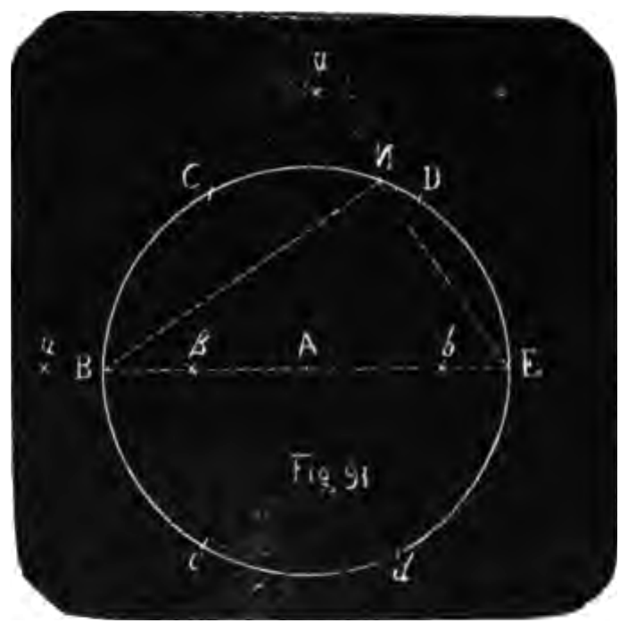

§§ 180–185: Kepler Triangle & Platonic Solid Circumradii¶
180. Problem. To describe (Fig. 90) a right triangle whose sides stand in arithmetic progression.
Solution. Having carried out the construction of the preceding solution (§ 178),
f. 0132 · p. 107with center \(E\) and radius \(EQ\), cut the circumference at \(N\). Triangle \(BNE\) will be the required one.
Demonstration. It will be right-angled (III.31). Setting \(AB = 1\), we have \(EQ = EA + AQ = \frac{6}{5} = EN\). And since \((BE)^2 = (EN)^2 + (BN)^2\) (I.47), i.e., \(4 = \frac{36}{25} + (BN)^2\), we obtain \((BN)^2 = \frac{64}{25}\), hence \(BN = \frac{8}{5}\) and \(BE = \frac{10}{5}\) in arithmetic progression.
181. Problem. To describe (Fig. 91) a right triangle whose sides stand in geometric progression.
Solution. With radius \(AB\) and center A, describe circle AB (\(BDd\)), and make \(AB = BC = CD = DE = Ed = dc\) along its circumference. Then make \(BD = Ba = Ea\), and \(Aa = D\beta = d\beta = Cb = cb\). Now with radius betab and center E, cut the circumference at N. Triangle \(BNE\) will be the required one.


Demonstration. Line \(AB\) is divided at beta in extreme and mean ratio (§ 46). Setting \(AB = 1\) and \(A\beta = x\), we have \(B\beta = 1 - x\), \(x^2 = 1 - x\), and \(x = A\beta = \frac{1}{2}(\sqrt{5} - 1)\), whence \(b\beta = 2A\beta = \sqrt{5} - 1 = EN\). Also \((BE)^2 = (EN)^2 + (BN)^2\) (III.31; I.47), i.e., \(4 = 6 - 2\sqrt{5} + (BN)^2\). Hence \((BN)^2 = 2(\sqrt{5} - 1) = BE \cdot NE\), so \(BE : BN :: BN : NE\) (VI.17). Q.E.D.
182. Lemma. Setting the edges of the five regular polyhedra \(= 1\), the radius of a sphere containing
Demonstration. By XIII.13, the diameter of the sphere containing the pyramid bounded by four equilateral triangles is sesquialter in power of the side of the pyramid; that is, setting the side \(= 1\), the diameter is \(= \sqrt{\frac{3}{2}}\), hence the radius \(= \frac{1}{2}\sqrt{\frac{3}{2}}\).
By XIII.15, the diameter of the sphere containing the cube is triple in power of the side, i.e., \(= \sqrt{3}\), hence the radius \(= \frac{1}{2}\sqrt{3}\).
By XIII.14, the diameter of the sphere enclosing the octahedron, namely that regular solid which has eight faces all equilateral triangles, is double in power of the side of one of these triangles, i.e., \(= \sqrt{2}\); hence the radius \(= \frac{1}{2}\sqrt{2}\).
By XIII.17, the sphere enclosing the dodecahedron, namely that regular solid which has twelve faces all regular pentagons, also encloses a cube whose side is a diagonal of those pentagons. Now I say that the diagonal \(BN\) (Fig. 64) of a pentagon \(ABLMN\), setting side \(AB = 1\), is \(= \frac{1}{2}(\sqrt{5} + 1)\). For (§ 137) \(BN = bE = Ab + AE = \frac{1}{2}(\sqrt{5} - 1) + 1\) (§ 182) \(= \frac{1}{2}(\sqrt{5} + 1)\). Thus \(BN\), the diagonal of a pentagon of side \(= 1\), is \(= \frac{1}{2}(\sqrt{5} + 1)\). If a cube is formed upon this, the sphere’s diameter will be \(\frac{1}{2}(\sqrt{5} + 1)\sqrt{3}\), and its radius \(= \frac{1}{4}\sqrt{3} \cdot (\sqrt{5} + 1)\).
By XIII.16, if \(AB\) be the diameter of the sphere enclosing the icosahedron, and (Fig. 92) \(AC\) be taken on it four times \(CB\), and the perpendicular \(CD\) be raised meeting semicircle \(ADB\) at \(D\), then if a circle be described with radius \(DB\) and a regular pentagon inscribed in it, the side of this pentagon will be the edge of the icosahedron, namely that regular solid with twenty equilateral triangular faces. Now the side of the pentagon has that
f. 0134 · p. 109ratio to the radius of the circumscribed circle which straight line \(Bb\) has to \(BA\) (Fig. 12) (§ 40). But setting \(AB = 1\), we have \(Ab = \frac{1}{2}(\sqrt{5} - 1)\); \((Ab)^2 = \frac{1}{4}(6 - 2\sqrt{5}) = \frac{1}{2}(3 - \sqrt{5})\); \((Bb)^2 = (AB)^2 + (Ab)^2\) (I.47) \(= \frac{5 - \sqrt{5}}{2}\). Hence \(Bb : AB :: \sqrt{\frac{5 - \sqrt{5}}{2}} : 1\); but \(\sqrt{\frac{5 - \sqrt{5}}{2}} : 1 :: 1 : \sqrt{\frac{5 + \sqrt{5}}{10}}\).
Therefore, setting the edge of the icosahedron \(= 1\), we have \(BD\) (Fig. 92) \(= \sqrt{\frac{5 + \sqrt{5}}{10}}\). Then \((AB)^2 = 5(BD)^2\) (XIII.16) \(= \frac{5 + \sqrt{5}}{2}\). Thus \(AB = \sqrt{\frac{5 + \sqrt{5}}{2}}\), and the radius \(= \frac{1}{2}\sqrt{\frac{5 + \sqrt{5}}{2}}\).
183. Problem. Given the edge \(AB\) (Fig. 93) of the five regular solids, to find the radius of the several spheres that enclose them.
Solution. With radius \(AB\) and center \(A\), describe circle \(BDd\), and make \(AB = BC = CD = DE = Ed\) along its circumference. Then make \(BD = Ba = B\alpha = E\alpha = Ea\). With center \(\alpha\) and radius \(\alpha a\), describe arc \(aP\). With the same center \(\alpha\) and radius \(\alpha B\), describe arc \(Bpqs\). With the same center \(\alpha\) and radius \(AB\), describe arc \(grt\). With the same center \(\alpha\) and radius \(BE\), describe arc \(MQRST\). With radius \(Aa\) and centers \(D, d\), describe two arcs intersecting at \(b\). With radius \(Ab\) and center \(E\), cut the circumference at \(L\). Make \(AB = aP = MQ\), then

\(Aa = MR\), then \(Eb = MS\), then \(BL = MT\). Next make \(aB = Pp\), then \(MB = Qq = Ss\), then \(Mg = Rr = Tt\). Then will be
\(Bp\) |
the radius of the sphere enclosing |
the tetrahedron |
\(Bq\) |
the radius of the sphere enclosing |
the cube |
\(gr\) |
the radius of the sphere enclosing |
the octahedron |
\(Bs\) |
the radius of the sphere enclosing |
the dodecahedron |
\(gt\) |
the radius of the sphere enclosing |
the icosahedron |
Demonstration. Setting \(AB = 1\), we have \(\alpha a = 2\sqrt{2}\) (§ 100) and \(\alpha B = \sqrt{3}\). Then \(\alpha a : \alpha B :: aP : Bp\) (§ 93), i.e., \(2\sqrt{2} : \sqrt{3} :: 1 : Bp\); hence \(Bp = \frac{1}{2}\sqrt{\frac{3}{2}}\). Therefore, etc. (§ 182).
We also have (§ 93) \(\alpha M : \alpha B :: MQ : Bq\), i.e., \(2 : \sqrt{3} :: 1 : Bq\); hence \(Bq = \frac{1}{2}\sqrt{3}\).
Likewise \(\alpha M : \alpha g :: MR : gr\), i.e., \(2 : 1 :: \sqrt{2} : gr\); hence \(gr = \frac{1}{2}\sqrt{2}\).
Equally \(\alpha M : \alpha B :: MS : Bs\). But \(MS = bE = \frac{1}{2}(\sqrt{5} + 1)\) (§ 182), so \(2 : \sqrt{3} :: \frac{1}{2}(\sqrt{5} + 1) : Bs\); hence \(Bs = \frac{1}{4}\sqrt{3} \cdot (\sqrt{5} + 1)\).
Finally \(\alpha M : \alpha g :: MT : gt\), with \(MT = BL\). Now \((BL)^2 = (BE)^2 - (EL)^2\) (III.31; I.47) \(= (BE)^2 - (Ab)^2 = 4 - \frac{1}{2}(3 - \sqrt{5})\) (§ 182) \(= \frac{5 + \sqrt{5}}{2}\). Hence \(BL = MT = \sqrt{\frac{5 + \sqrt{5}}{2}}\), so \(2 : 1 :: \sqrt{\frac{5 + \sqrt{5}}{2}} : gt\) and \(gt = \frac{1}{2}\sqrt{\frac{5 + \sqrt{5}}{2}}\).
Thus distances \(Bp, Bq, gr, Bs, gt\) are respectively the radii of the spheres enclosing the five regular solids: pyramid, cube, octahedron, dodecahedron, icosahedron.
184. Problem. Given
f. 0136 · p. 111the radius \(AB\) (Fig. 94) of the sphere enclosing the five regular solids, to find their edges.
Solution. With radius \(AB\) and center \(A\), let the great circle \(BDd\) of the sphere be described, and make \(AB = BC = CD = DE = Ed\) along its circumference; then \(BD = Ba = Ea\), and \(Aa = Db = db\). Then make \(AB = aH\), and \(Aa = EF = Hh\). With center \(a\) and radius \(aE\), describe arc \(ESQP\). With the same center \(a\) and radius \(BE\), describe arc \(Lstqp\). With the same center \(a\) and radius \(ah\), describe arc \(hT\). Make \(Aa = EP\), \(AB = EQ\), \(Ab = ES\), and \(bF = hT\). Next make \(EL = Pp = Qq = Ss\), and \(hL = Tt\). Then will be
\(Lp\) |
the edge of the |
tetrahedron |
\(Lq\) |
the edge of the |
cube |
\(Aa\) |
the edge of the |
octahedron |
\(Ls\) |
the edge of the |
dodecahedron |
\(Lt\) |
the edge of the |
icosahedron |
Demonstration. Arc \(Eh\) equals one eighth part of the circumference (§ 30); hence \(ah = \sqrt{5}\) (§ 186). Since angle \(bAF\) is right—the same as \(BAF\), point \(b\) lying on \(AE\) (§§ 13, 27)—\(bF\) will be the side of the pentagon (§ 40) and \(Ab\) the side of the decagon inscribed in circle \(BDd\) (§ 41). Setting therefore \(AB = 1\), we have \(Ab = \frac{1}{2}(\sqrt{5} - 1)\) (§ 181), \((bF)^2 = (AF)^2 + (Ab)^2 = 1 + \frac{1}{4}(6 - 2\sqrt{5}) = \frac{5 - \sqrt{5}}{2}\); hence \(bF = hT = \sqrt{\frac{5 - \sqrt{5}}{2}}\). We then have \(aE : aL :: EP : Lp\) (§ 93), i.e., \(\sqrt{3} : 2 :: \sqrt{2} : Lp\); hence \(Lp = 2\sqrt{\frac{2}{3}}\). Now the ratio of the sphere’s radius to the edge of the inscribed tetrahedron is \(\frac{1}{2}\sqrt{\frac{3}{2}} : 1\) (§ 182) \(:: 1 : 2\sqrt{\frac{2}{3}}\). Setting therefore the sphere’s radius \(AB = 1\), \(Lp\) will be the edge of the inscribed tetrahedron.
We also have (§ 93) \(aE : aL :: Eq : Lq\), i.e., \(\sqrt{3} : 2 :: 1 : Lq\); hence \(Lq = 2\sqrt{\frac{1}{3}}\). Now the ratio of the sphere’s radius to the edge of the inscribed cube is \(\frac{1}{2}\sqrt{3} : 1\) (§ 182) \(:: 1 : 2\sqrt{\frac{1}{3}}\). Therefore, etc.
Likewise we shall have \(Aa = \sqrt{2}\) as the edge of the octahedron, since the
f. 0137 · p. 112ratio of the sphere’s radius to the edge of the inscribed octahedron is \(\frac{1}{2}\sqrt{2} : 1\) (§ 182) \(:: 1 : \sqrt{2}\). Therefore, etc.
Equally \(aE : aL :: ES : Ls\), i.e., \(\sqrt{3} : 2 :: \frac{1}{2}(\sqrt{5} - 1) : Ls\); hence \(Ls = \frac{\sqrt{5} - 1}{\sqrt{3}}\), matching the sphere-to-dodecahedron ratio \(\frac{1}{4}\sqrt{3}(\sqrt{5} + 1) : 1\) (§ 182) \(:: 1 : \frac{\sqrt{5} - 1}{\sqrt{3}}\). Therefore, etc.
Finally \(ah : aL :: hT : Lr\) (§ 93), i.e., \(\sqrt{5} : 2 :: \sqrt{\frac{5 - \sqrt{5}}{2}} : Lt\); hence \(Lt = 2\sqrt{\frac{5 - \sqrt{5}}{10}}\), matching \(\frac{1}{2}\sqrt{\frac{5 + \sqrt{5}}{2}} : 1\) (§ 182) \(:: 1 : 2\sqrt{\frac{5 - \sqrt{5}}{10}}\). Therefore, etc.
185. Problem. Given a point \(B\) (Fig. 95) on the circumference of a given circle, to find two other points \(L\) and \(M\) such that triangle \(BLM\) is equilateral and touches the circle with side \(LM\) at its midpoint \(E\).
Solution. Along the circumference of the given circle, make \(AB = BC = CD = DE = Ed\) equal to its radius. Then make \(BD = Ba = Ea\). With center \(a\) and radius \(aA\), describe an arc passing through \(\alpha\). With center \(E\) and radius \(EA\), describe an arc cutting it at \(\alpha\). With the same radius \(\alpha E\) and center \(\alpha\), cut the circumference at \(P\). Now with radius \(EP\) and center \(E\), describe an arc passing through \(L\) and \(M\). With radius \(aP\) and centers \(D\) and \(d\), mark two arcs cutting the preceding at \(L\) and \(M\); these will be the two required points.
Demonstration. Comparing points \(a, A, E, \alpha, P\) of this Fig. 95 with
f. 0138 · p. 113points \(Q, A, p, B, P\) of Fig. 3, from the equation \((AQ)^2 = (Ap)^2 + (pQ)^2 - pP \cdot pQ\) belonging to Fig. 3 (§ 17) we derive for Fig. 95 \((Aa)^2 = (AE)^2 + (Ea)^2 - EP \cdot Ea\). Hence (§ 27) \(2 = 1 + 3 - EP \cdot \sqrt{3}\), so \(2 = EP \cdot \sqrt{3}\) and \(EP = \frac{2}{3}\sqrt{3}\). Since \(E, P, a\) are collinear (§ 13), \(Pa = Ea - EP = \frac{1}{3}\sqrt{3}\).
Suppose \(BE\) drawn, cutting \(Dd\) at \(R\); then (§ 104) \(BR = \frac{3}{2}\), \(RD = \frac{1}{2}\sqrt{3}\), \(BE = 2\), so the fourth proportional to \(BR, RD, BE\) will be \(= \frac{2}{3}\sqrt{3} = EM\). Also (§ 104) \(RE = \frac{1}{2}\), \(BD = \sqrt{3}\) (§ 2), so the fourth proportional to \(BR, BD, RE\) will be \(= \frac{1}{3}\sqrt{3} = DM\). Thus \(EM, DM\) are of the required lengths for triangle \(BEM\) to be similar to triangle \(BRD\) (VI.2), since point \(M\) could fall nowhere else (I.8). Likewise triangle \(BRd\) is similar to triangle \(BEL\). Hence triangle \(BDd\) is similar to triangle \(BML\) (VI.20), so \(BML\) is equilateral; moreover angles \(BEM, BEL\) are right, equal to \(BRD, BRd\), and \(EM = EL\). Therefore triangle \(BLM\) is the required one.